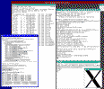

|

NetBSD/pmax 1.6.2 with X11 |
The emulator emulates (networks of) real machines. The machines may consist of ARM, MIPS, Motorola 88K, PowerPC, and SuperH processors, and various surrounding hardware components such as framebuffers, busses, interrupt controllers, ethernet controllers, disk controllers, and serial port controllers.
GXemul, including the dynamic translation system, is implemented in portable C++ (although most parts are still legacy C-style code), which means that the emulator will run on practically any 64-bit or 32-bit Unix-like systems, with few or no modifications.
Devices and processors are not simulated with 100% accuracy. They are only "faked" well enough to allow guest operating systems to run without complaining too much. Still, the emulator could be of interest for academic research and experiments, such as when learning how to write operating system code.
The emulator contains code which tries to emulate the workings of CPUs and surrounding hardware found in real machines, but it does not contain any ROM code. You will need some form of program (in binary form) to run in the emulator. For some emulation modes, PROM calls are handled by the emulator itself, so you do not need to use any ROM image at all.
You can use pre-compiled kernels (for example NetBSD kernels, or Linux), or other programs that are in binary format, and in some cases even actual ROM images. A couple of different file formats are supported: ELF, a.out, COFF/ECOFF, SREC, and raw binaries.
If you do not have a kernel as a separate file, but you have a bootable disk image, then it is sometimes possible to boot directly from that image. This works for example with DECstation emulation, Dreamcast emulation, or when booting from generic ISO9660 CDROM images if the kernel is included in the image as a plain file.
Thanks to (in no specific order) Joachim Buss, Olivier Houchard, Juli Mallett, Juan Romero Pardines, Carl van Schaik, Miod Vallat, Alec Voropay, Göran Weinholt, Alexander Yurchenko, and everyone else who has provided feedback on previous releases.
(The documentation still largely refers to how things worked in the old framework.)
The new framework emulates components. A component can have sub-components (children) and a parent, so the components make up a configuration tree:
Each component has a path, e.g. root.machine1.mainbus0.cpu0 for the CPU in the right-most machine in the example above. Often, shorter paths can be used, such as machine1 instead of root.machine1, if there is no ambiguity.
Each component has a state, which is a collection of variables. For e.g. a CPU component, the state is usually a set of registers. Each component also has a set of methods which can be executed. A CPU may disassemble instructions using its unassemble method:
GXemul> root
root
\-- machine0 [testmips]
\-- mainbus0
|-- ram0 (32 MB at offset 0)
|-- rom0 (16 MB at offset 0x1fc00000)
\-- cpu0 (5KE, 100 MHz)
accuracy = cycle
step = 0
GXemul> cpu0.unassemble
<f>
0xffffffff800100f8 <- 27bdffd0 addiu sp,sp,-48
0xffffffff800100fc 3c03cccc lui v1,0xcccc
0xffffffff80010100 3c028888 lui v0,0x8888
0xffffffff80010104 8f8b8008 lw t3,-32760(gp)
0xffffffff80010108 8f8a8004 lw t2,-32764(gp)
0xffffffff8001010c afb60028 sw s6,40(sp)
0xffffffff80010110 afb50024 sw s5,36(sp)
...
|
When single-stepping, all state change is displayed. (In the old framework, it was up to individual device/component implementations to print debug messages.)
GXemul> step
step 0: cpu0: <f>
0xffffffff800100f8 27bdffd0 addiu sp,sp,-48
=> cpu0.pc: 0xffffffff800100f8 -> 0xffffffff800100fc
=> cpu0.sp: 0xffffffffa0007f00 -> 0xffffffffa0007ed0
GXemul>
step 1: cpu0: 0xffffffff800100fc 3c03cccc lui v1,0xcccc
=> cpu0.pc: 0xffffffff800100fc -> 0xffffffff80010100
=> cpu0.v1: 0 -> 0xffffffffcccc0000
GXemul>
|
The example above may not be that interesting, but imagine that the CPU reads from a device which has a zero-on-read status register. Then the output may look something like this: (this is a made-up example, for now)
GXemul> step
step 2: cpu0: 0xffffffff800101f4 12345678 lw t3,256(a1)
=> cpu0.pc: 0xffffffff800101f4 -> 0xffffffff800101f8
=> cpu0.t3: 0 -> 0x2200
=> intcontroller.status: 0x2200 -> 0
GXemul>
|
Components that have a frequency are executed in steps. Those that do not have a frequency only do things if triggered by some other means (i.e. another component). The components' relative frequencies determine how many steps they will run at a time. For example, if we have component A running at 100 MHz, and component B running at 1 MHz, then in 100 steps A will be executing 100 cycles and B only 1. The GXemul framework makes sure that the exact sequence of cycles is the same nomatter if the user is single-stepping, or running the simulation continuously.
The frequency mentioned above does not have anything at all to do with how fast a particular host executes the simulation. The frequencies are only relative to each other.
Is the new framework cycle-accurate? Both yes and no. The framework itself aims to be step/cycle accurate, but it is of course up to the implementation of individual components to also be cycle accurate. For example, the CPU components that are available out-of-the-box in GXemul do not try to simulate out-of-order execution, or pipe-line stalls, or other effects that happen in a real processor, so even though the aim is that the implementation should be cycle accurate, it does not simulate any existing real-world processor in a cycle-accurate manner.
(Is it theoretically possible to implement pipe-lined and/or out-of-order CPU models for GXemul's new framework? Maybe. But that has not been done.)
The main part of the code is released under a 3-clause BSD-style license (or "revised BSD-style" if one wants to use GNU jargon). Apart from the main code, some files are copied from other sources such as NetBSD, for example header files containing symbolic names of bitfields in device registers. They are also covered by similar licenses, but with some additional clauses. The main point, however, is that the licenses require that the original Copyright and license terms are included when you distribute a copy, modified or not, even if it is in binary form.
If you plan to redistribute GXemul without supplying the source code, then you need to comply with each individual source file some other way, for example by writing additional documentation containing Copyright notes. This has not been done in the official GXemul distribution, since it is in source code form and already includes the Copyright messages. You need to check all individual files for details. The "easiest way out" if you plan to redistribute code from GXemul is, of course, to let it remain Free Software and simply include the source code.
$ ./configure $ make
This should work on most Unix-like systems. GXemul does not require any specific libraries to build, however, the following optional libraries or third-party software give additional functionality:
The emulator's performance is dependent on both runtime settings and on compiler settings, so you might want to experiment with using different CXX and CXXFLAGS environment variable values when running the configure script.
During development of the emulator, configure --debug may be used to enable some debugging aids and turn off optimizations. make test can be used to run unit tests.
Running make install will install GXemul into /usr/local, or wherever the configure script detects that user software is installed on your system (may be overridden by setting the PREFIX environment variable before running configure).
Running gxemul -V will start GXemul in an "empty state" in the interactive debugger. You may then type help to see a list of available commands.
To get some ideas about what is possible to run in the emulator, please read the section about installing "guest" operating systems. The most straight forward guest operating system to install is NetBSD/pmax; the instructions provided here should let you install NetBSD/pmax in a way very similar to how it is done on a real DECstation.
If you are interested in using the emulator to develop code on your own, then you should also read the section about Hello World.
To exit the emulator, type CTRL-C to show the single-step debugger prompt (if it is not already displayed), and then type quit.
If you are starting an emulation by entering settings directly on the command line, and you are not using the -x option, then all terminal input and output will go to the main controlling terminal. CTRL-C is used to break into the debugger, so in order to send CTRL-C to the running (emulated) program, you may use CTRL-B. (This should be a reasonable compromise to allow the emulator to be usable even on systems without X Windows.)
There is no way to send an actual CTRL-B to the emulated program, when typing in the main controlling terminal window. The solution is to either use configuration files, or use -x. Both these solutions cause new xterms to be opened for each emulated serial port that is written to. CTRL-B and CTRL-C both have their original meaning in those xterm windows.
Please read the sections about emulation modes and guest operating systems for more information about the machines and operating systems, respectively, that can be considered "working" in the emulator.
(There is some code in GXemul for emulation of other architectures, but they are not stable or complete enough to be listed among the "working" architectures.)
If it does not build or run, then it can be considered a bug. Please report it to the development mailing list.
It is generally tested on FreeBSD/amd64, FreeBSD/alpha, Linux, and also NetBSD and OpenBSD inside GXemul itself.
Note 1: The dynamic translation engine does not require backends for native code generation to be written for each individual host architecture; the intermediate representation that the dyntrans system uses can be executed on any host architecture.
Note 2: Although GXemul may build and run on non-Unix-like platforms, such as Cygwin, Unix-like systems are the primary platform. Some functionality may be lost when running on Cygwin.
The existance of instruction and data caches is "faked" to let operating systems think that they are there, but for all practical purposes, these caches are non-working.
The emulator is in general not timing-accurate, neither at the instruction level nor on any higher level. An attempt is made to let emulated clocks run at the same speed as the host (i.e. an emulated timer running at 100 Hz will interrupt around 100 times per real second), but since the host speed may vary, e.g. because of other running processes, there is no guarantee as to how many instructions will be executed in each of these 100 Hz cycles.
If the host is very slow, the emulated clocks might even lag behind the real-world clock.
Machines emulated using the new framework:
-->
Machines emulated using the legacy framework:
(
(
Note that of all of the machines above, none of them is emulated to 100%. The most complete emulation mode is probably the DECstation 5000/200. Things that will most likely not work include running raw PROM images for most machines, SGI IRIX, MacOS X or Darwin, Windows NT, or Dreamcast games.
There may be code in GXemul for emulation of some other machine types; the degree to which these work range from almost being able to run a complete OS, to almost completely unsupported, perhaps just enough support to output a few boot messages via serial console. (See the end of this section on the Guest OSes page for some examples, but remember that these do not necessarily work.)
In addition to emulating real machines, there are also the test machines. A test machine consists of one or more CPUs and a few experimental devices such as:
This mode is useful if you wish to run experimental code, but do not wish to target any specific real-world machine type, for example for educational purposes.
You can read more about these experimental devices here.
{kind=link}